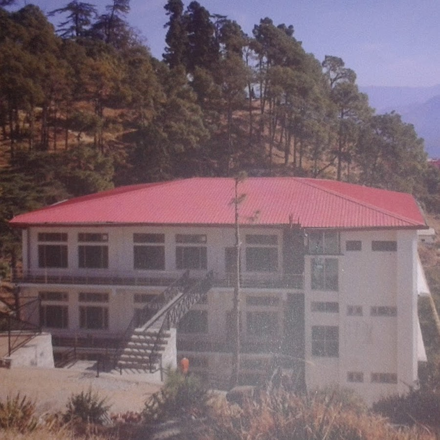

Sharda Public School Almora (affiliated to CBSE, New Delhi) was found in the year 2001 with the aim of providing quality education to the residents of Almora and its nearby areas.
Sharda Public School provides a friendly and secular environment with the aim of building confident, respectful and responsible individuals.The school nurtures and develops each individual’s capabilities so as to integrate a harmonious development of the child’s intellectual, emotional and physical capacities.Self confidence and the right set of values form the cornerstone of a successful and happy life, and we at Sharda Public School guide our students to grow up with a sense of social awareness, civic responsibility and personal growth.

In Sharda Public School, learning is supported across the curriculum through activities in which children express their ideas through art ( art activities and craft workshops).Our curriculum includes activities that help children develop their cognitive, socio-emotional and motor activities.Such integration of making and enjoying art encourage each students’ full and all-sided development.
Key Features :-
PLAY
STORY
KARATE CLASSES
ARTS AND CRAFTS
GARDENING
DANCE CLASSES
MUSIC
THEATRE
RHYME TIME
FILM FEST
SINGING
EXCERCISE
NATURE PLAY
YOGA & MEDITATION
INDOOR & OUTDOOR GAMES